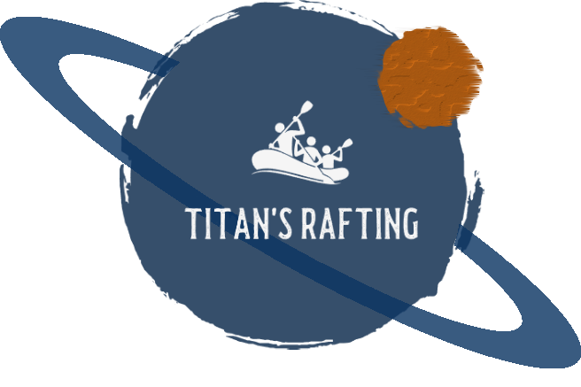

Overview
Purpose
Titan's Rafting is a new project that will take place on Titan, the largest moon of Saturn. The idea of this website is to promote the project and find clients willing to invest in the most extreme adventure. The starting date will be March 2060 with limited seats.
Audience
The company will focus on excentric billionaires eager to earn a "Founders' Club" or "Diamond Founders' Club" elite membership by pre-renting a rafting service.
Branding
Website Logo
Style Guide
Color Palette
Palette URL:
https://coolors.co/324c6f-cb5f00-788a9d-f79c4c-3e3e3e| Primary | Secondary | Accent 1 | Accent 2 | Accent 3 |
|---|---|---|---|---|
| #324c6f | #cb5f00 | #788a9d | f79c4c | 3e3e3e |
Typography
Heading Font: College Semi-condensed
Paragraph Font: Inter
Normal paragraph example
Located on Titan, the biggest natural satellite of Saturn, Vid Flumina is one of the few flowing rivers outside planet Earth. It's lenght is compared with the Nile, a lengh over 400km.
This impresive river flows liquid methane, a highly flammable gas. Only the bravest will dare to tame its course.
Titan's Rafting explores a whole new way to experience whitewater rafting!, literally something outside of this world.
Planning to start operating in March 2060, Titan's Rafting is the first company taking the sport to a whole new level.
Colored paragraph example
If you thought parachuting, shark diving or even flying to the International Space Station was the most exciting experience wait to see what Titan has to offer.
Navigation
Site Map
Wireframes
Home